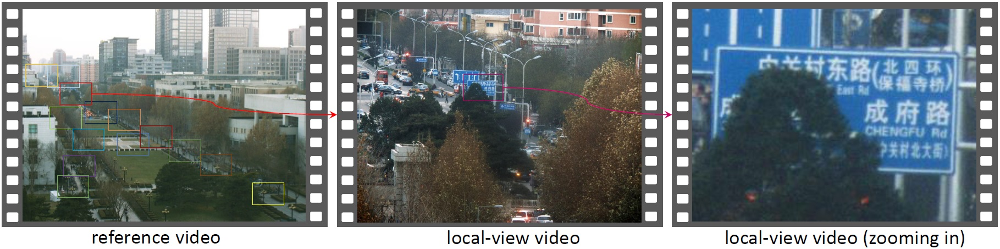
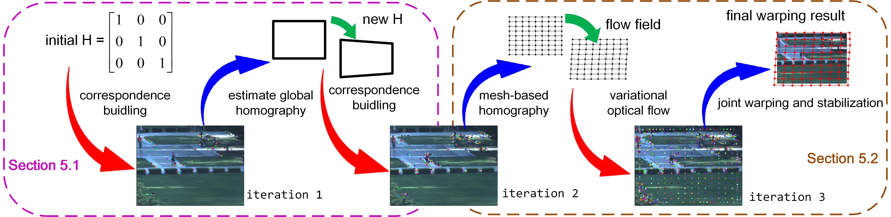
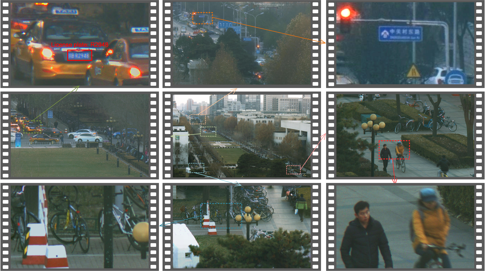
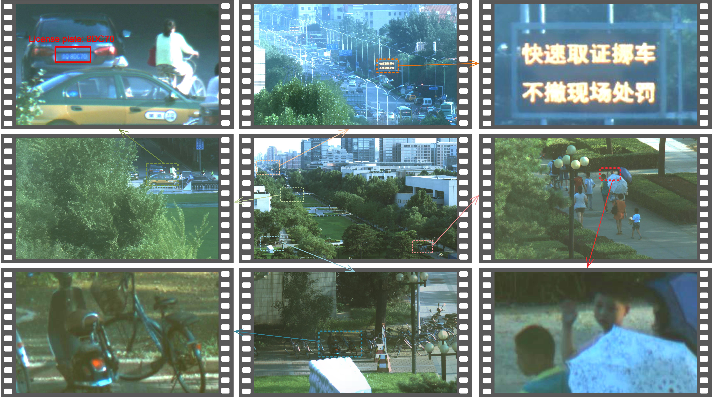

<!DOCTYPE HTML>
<!--
	Miniport by HTML5 UP
	html5up.net | @n33co
	Free for personal and commercial use under the CCA 3.0 license (html5up.net/license)
-->
<html>
	<head>
		<title>Multiscale Gigapixel Video ICCP2017</title>
		<meta charset="utf-8" />
		<meta name="viewport" content="width=device-width, initial-scale=1" />
		<!--[if lte IE 8]><script src="assets/js/ie/html5shiv.js"></script><![endif]-->
		<link rel="stylesheet" href="assets/css/main.css" />
		<!--[if lte IE 8]><link rel="stylesheet" href="assets/css/ie8.css" /><![endif]-->
		<!--[if lte IE 9]><link rel="stylesheet" href="assets/css/ie9.css" /><![endif]-->
	</head>
	<body>

		<!-- Nav -->
			<nav id="nav">
				<ul class="container">
					<li><a href="#abstract">Abstract</a></li>
					<li><a href="#intro">Introduction</a></li>
					<li><a href="#results">Results</a></li>
					<li><a href="#download">Download</a></li>
				</ul>
			</nav>

		<!-- Home -->
			<div class="wrapper style1 first">
				<article class="container" id="abstract">
					<div class="row">
						
						<div>
							<header>
								<h1 style="line-height: 50px;">Multiscale Gigapixel Video: A Cross Resolution Image Matching andWarping Approach</h1>
							</header>
							<p>
								<h2>Abstract</h2>
								<p style="text-align:left; font-size:25px;">We present a multi-scale camera array to capture and synthesize gigapixel videos in an efficient way.
									 Our acquisition setup contains a reference camera with a short-focus lens to get a large field-of-view video
									  and a number of unstructured long-focus cameras to capture local-view details. Based on this new design, we
									   propose an iterative feature matching and image warping method to independently warp each local-view video
									    to the reference video. The key feature of the proposed algorithm is its robustness to and high accuracy
										 for the huge resolution gap (more than 8X resolution gap between the reference and the local-view videos),
										  camera parallaxes, complex scene appearances and color inconsistency among cameras. Experimental results
										   show that the proposed multi-scale camera array and cross resolution video warping scheme is capable of
										    generating seamless gigapixel video without the need of camera calibration and large overlapping area
											 constraints between the localview cameras.</p>
							</p>
						</div>
					</div>
				</article>
			</div>

		<!-- Home -->
			<div class="wrapper style2">
				<article class="container" id="intro">
				<header>
					<h2>Introduction</h2>
				</header>

				<div class = "row" >
					<div style="text-align:center;">
						
						
					</div>
					<p style="text-align:left; font-size:25px;">Figure.1: Top: Our capture device. 
						Our system is integrated with one reference camera and 14 local-view cameras. 
						All of them are PointGrey FL3-U3-88S2C-C rolling-shutter cameras without hardware synchronization
						requirement, and work at 4000X3000 spatial resolution and 15 fps frame rate. In particular, the localview 
						cameras share a focal length fl = 135mm to capture the local high resolution videos, and the focal length of 
						the reference camera is fr = 16mm so as to cover a large field-of-view of an outdoor scene. 
						Each local-view camera can be static or moving during data capture. Bottom: example data captured by our camera array.
						</p>
				</div>

				<div class = "row" >
					<div style="text-align:center;">
						
					</div>
					<p style="text-align:left; font-size:25px;">Figure.2: Pipeline of our cross resolution matching and warping algorithm. The red arrows denote the feature correspondence building process and the blue arrows denote the warping process.</p>
				</div>
				</article>
			</div>

			<div class="wrapper style3">
				<article class="container" id="results">
				<header>
					<h2>Results</h2>
				</header>
				<div class = "row" >
					<div style="text-align:center;">
						
					</div>
					<p style="font-size:25px;">Figure.3: Zoom in the final composite gigapixel video. (Winter)</p>
				</div>

				<div class = "row" >
					<div style="text-align:center;">
						
					</div>
					<p style="font-size:25px;">Figure.3: Zoom in the final composite gigapixel video. (Summer)</p>
				</div>

				<header>
					<h2>Video</h2>
				</header>
				<div class = "row" >
					<iframe width="1280" height="720" src="https://www.youtube.com/embed/mctywMPZXhU?ecver=1" frameborder="0" allowfullscreen></iframe>
				</div>
				</article>
			</div>

			<div class="wrapper style1">
				<article class="container" id="download">
				<header>
					<h2>Download</h2>
				</header>
				<div class = "row" >
					<p style="font-size:25px;"><a href="./papers/ICCP2017.pdf">Paper</a></p>
					<p style="font-size:25px;"><a href="./videos/iccp_video.mp4">Video</a></p>
				</div>
				</article>
			</div>


		<!-- Scripts -->
			<script src="assets/js/jquery.min.js"></script>
			<script src="assets/js/jquery.scrolly.min.js"></script>
			<script src="assets/js/skel.min.js"></script>
			<script src="assets/js/skel-viewport.min.js"></script>
			<script src="assets/js/util.js"></script>
			<!--[if lte IE 8]><script src="assets/js/ie/respond.min.js"></script><![endif]-->
			<script src="assets/js/main.js"></script>

	</body>
</html>
